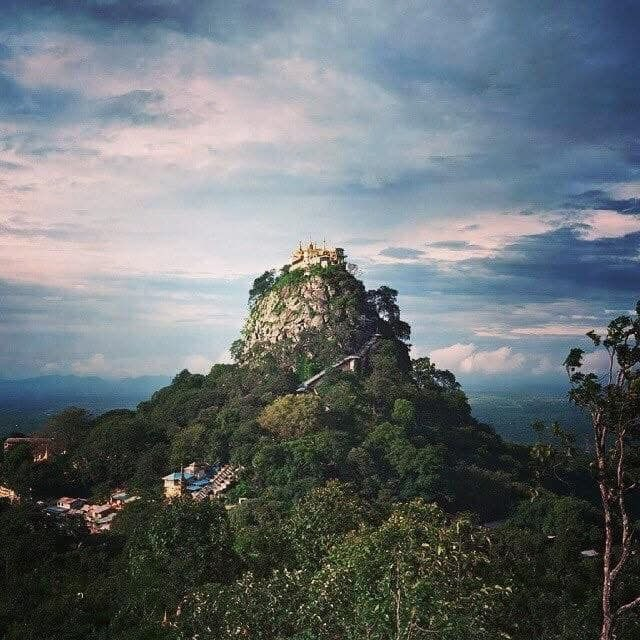

Inle Mount Popa is one of Myanmar’s most famous natural landmarks. Located near Bagan, this extinct volcano rises dramatically from the surrounding plains. At the top stands Mount Popa, home to the sacred Taung Kalat monastery, which attracts many pilgrims each year. Known as the spiritual center of Myanmar’s nat (spirit) worship, Mount Popa offers breathtaking views and a peaceful atmosphere, making it a must-visit destination for both travelers and worshippers.
ပုပ္ပါးတောင် သည် မြန်မာနိုင်ငံတွင် အထင်ရှားဆုံး သဘာဝအထင်ကရနေရာတစ်ခု ဖြစ်ပါသည်။ ပုဂံအနီးတွင် တည်ရှိပြီး မီးတောင်ဟောင်း တစ်ခုဖြစ်ပါသည်။ ထိပ်တောင်ပေါ်တွင် တည်ရှိသော Mount Popa သည် တောင်ကလပ်ဘုန်းတော်ကြီးကျောင်း၏ တည်နေရာဖြစ်ပြီး ဘာသာရေးယုံကြည်သူများအတွက် အရေးပါသော နတ်ကိုးကွယ်ရာနေရာတစ်ခုလည်း ဖြစ်ပါသည်။ သဘာဝအလှအပနှင့် တိတ်ဆိတ်အေးချမ်းသော ပတ်ဝန်းကျင်ကြောင့် ခရီးသွားများအတွက် လာရောက်လည်ပတ်ရန် ထိုက်တန်သော နေရာတစ်ခု ဖြစ်ပါသည်။